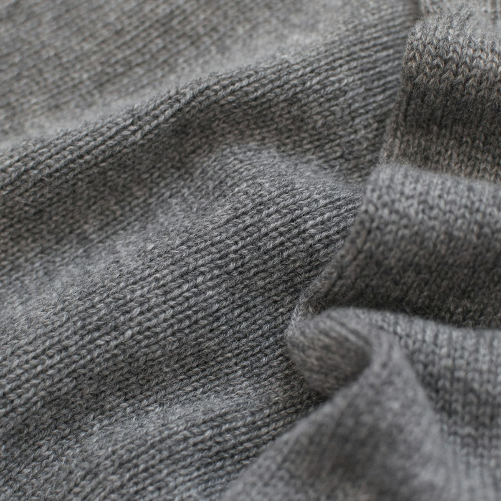
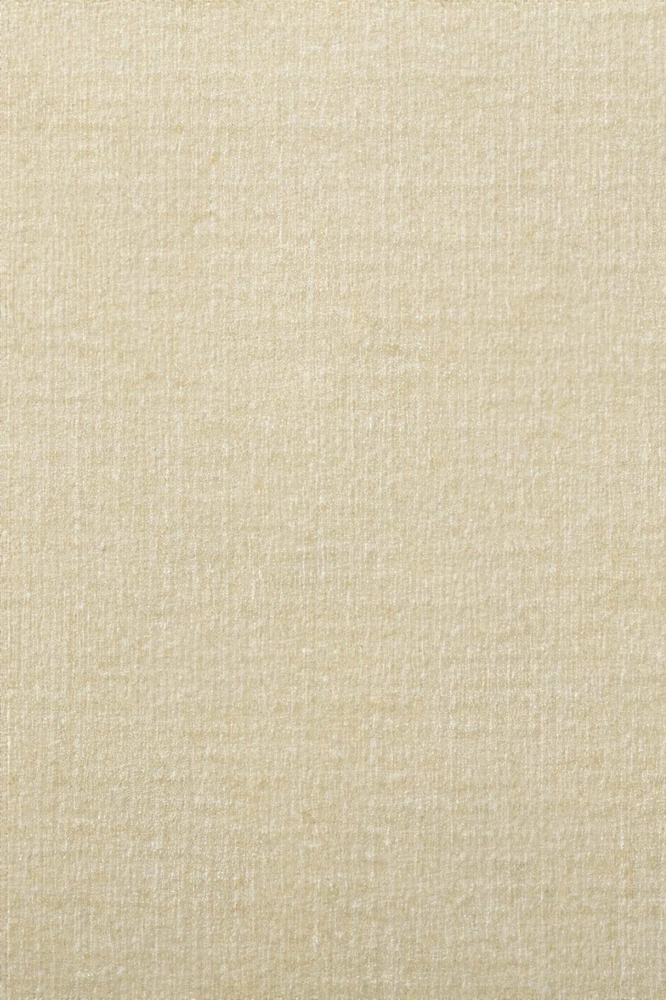
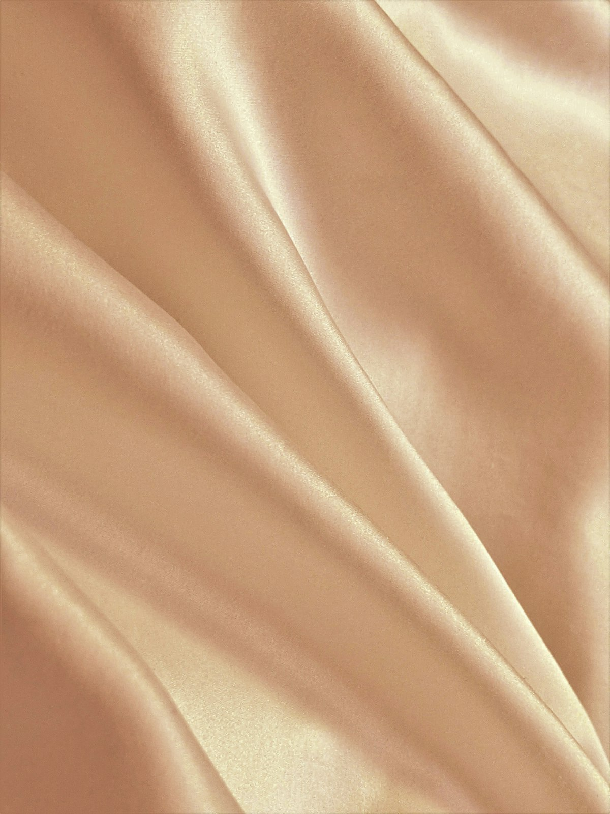
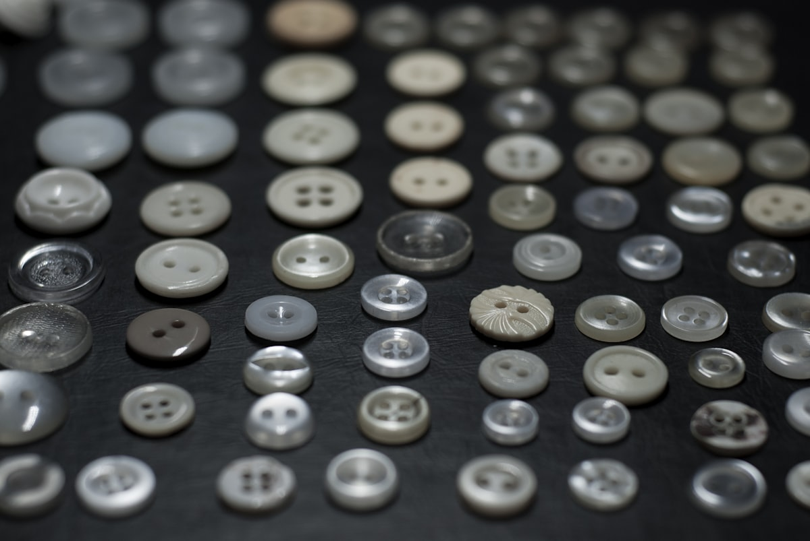

Деловой костюм
Двойка или тройка под конкретные задачи: переговоры, выступления, ежедневный офис. Подбор ткани, силуэта и канвы вручную.

Закрытый дом пошива для тех, кто привык быть точным. Личный закройщик, итальянские и английские ткани, пять примерок — и костюм, который не требует объяснений.
В Maison Veret работают трое закройщиков и один главный мастер. Мы не открываем дверь массовому потоку: четыре приватные примерки в неделю — это потолок, за которым начинается компромисс с качеством.
Мы говорим о задачах, а не о моделях. Костюм для совета директоров и костюм для частной встречи — разные пропорции плеча, разная плотность шерсти, разный голос подкладки. Гардероб должен работать тихо: только аккуратная, спокойная уверенность, которую считывают с первой секунды.
Двойка или тройка под конкретные задачи: переговоры, выступления, ежедневный офис. Подбор ткани, силуэта и канвы вручную.
Вечерний костюм с шёлковыми лацканами, под чёрный галстук или Black Tie. Свободная архитектура плеч, выверенная длина.
5–7 предметов, которые работают вместе: костюмы, рубашки, верх. Решает задачу года, а не одного выхода.
32 мерки, итальянский хлопок, ручная пришивка пуговиц. От воротника до манжет — под индивидуальный стиль.
Работаем с уже имеющимся гардеробом: правим линию плеча, талию, длину рукава и брюк. Возвращаем дорогим вещам форму.
От первого разговора до финальной посадки проходит шесть–восемь недель. Это не сервис «по таблице» — это пять личных встреч с закройщиком в нашей примерочной. Мы не торопимся: костюм должен «сесть» на дыхании, на жесте, на привычной осанке клиента.
Знакомство и разговор о задачах: где и когда вы носите костюм, какой образ хотите транслировать.
90 минут32 точки измерений с учётом осанки, манеры держаться и привычных жестов. Фиксируем рабочую руку.
60 минутОбразцы итальянских и английских домов: Loro Piana, Vitale Barberis Canonico, Holland & Sherry.
120 минут«Канва» — макет костюма из неотбелённой ткани. Корректируем баланс, плечо, грудь, отрезной шов.
45 минутДоводим длину рукава с учётом манжет рубашки, длину брюк и положение пуговицы талии.
45 минут
Super 130s–180s. Лёгкая, держит форму, не блестит. Базовая ткань для делового костюма.

Тёплый и мягкий, для пиджаков «вне переговорной»: ужин, путешествие, приватный приём.

Ирландский и бельгийский. Для лета и южных поездок: дышит, элегантно ложится в складки.

Купро и вискоза с шёлком. Скользят по рубашке, не сминаются, дают пиджаку «дыхание».

Рог, перламутр, корозо. Под цвет ткани, под характер клиента и характер вечера.


Костюм всегда «выдаёт себя» на расстоянии вытянутой руки. Поэтому пять элементов мы делаем только вручную — иголкой, мелом, шёлковой нитью.


Maison Veret принимает не более четырёх клиентов в неделю. Встреча — в нашей примерочной на Поварской или, по договорённости, в вашем офисе или резиденции. Мы перезвоним лично — никаких рассылок, никаких напоминаний от третьих сервисов.